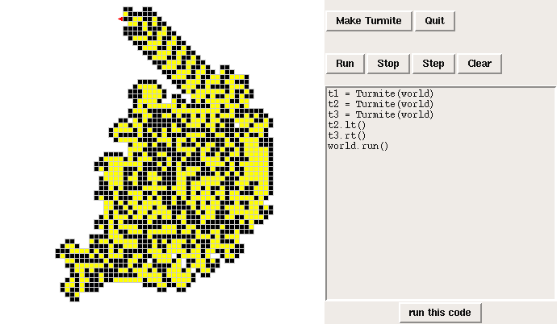
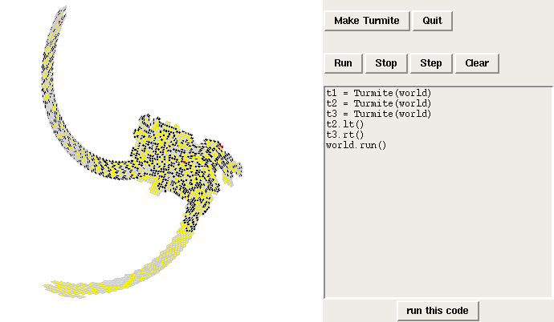

TurmiteWorld
TurmiteWorld is used in Computational Modeling to demonstrate cellular automata and finite state machines, including Langton's Ant. (The misspelling of "termite" is deliberate; it is a tribute to Alan Turing).In one of the homeworks, students are asked to implement the cellular automaton of their choice, starting with some sources for examples. Some of the results (with brief descriptions) are available here.
TurmiteWorld is an implementation of Langton's Ant, a four-state turing machine that "lives" on a 2-dimensional, 2-state "tape". During each time step, Langton's Ant follows this program:
- If the current cell is yellow, turn right. Otherwise turn left.
- Toggle the current cell (black becomes yellow and vice versa).
- Move forward one cell.
Since the rules are simple and the world is simple, we expect the behavior of the system to be simple, but surprisingly Langton's Ant follows a complex and unpredictable path for more than 10 000 steps. After that, the ant repeats a sequence of 104 steps, each time shifting by one cell toward the upper left corner. The resulting structure is called the "highway".
The following screenshot shows the state of the system shortly after the ant finds the highway. The ant is the red triangle in the upper left.

The program in the "run this code" entry demonstrates a more complicated pattern starting with three Turmites facing in different directions.
Here is the code that implements Langton's rules:
def step(self):
if self.is_on_mark():
self.lt()
else:
self.rt()
self.toggle()
self.fd()
Turmite methods are similar to Turtle methods: lt stands
for left turn, rt is right turn, and fd is forward.
One of the features provided by the World class is coordinate transformation. The most useful transformation is called CanvasTransform, which converts from standard Cartesian coordinates (origin in the middle, positive y axis up) to the graphics coordinates used by Tkinter (origin in the upper left, y axis down). As a just-for-fun example, it also provides SwirlTransform, which is a simple example of a nonlinear map.
Here is what the three-ant example looks like under a SwirlTransform:

In this case one of the Turmites finds the highway, but a second Turmite chases him down, and their interaction put the first Turmite in reverse, consuming the highway it just built (in the lower left). These two fall into a repeating pattern, building and destroying the highway. Meanwhile, in the upper left, the third Turmite makes his escape.
To paraphrase Wolfram, simple rules can yield a surprising amount of drama.